Imagemagick
Table of Contents
- 1. Introduction
- 2. Lets start with simple tool:
display - 3. Add effects with
convert- 3.1. How to convert image format?
- 3.2. How to negate image?
- 3.3. How to monochrome image?
- 3.4. How to grayscale image?
- 3.5. How to blur image?
- 3.6. How to emboss image?
- 3.7. How to shade image?
- 3.8. How to charcoal image?
- 3.9. How to change brightness of image?
- 3.10. How to add edge effect to image?
- 3.11. How to add border to image?
- 3.12. How to change saturation of image?
- 3.13. How to add paint effect?
- 3.14. How to solarize image?
- 3.15. How to add vignette effect?
1 Introduction
Imagemagick is a CLI tool which allow to edit image. In simple terms. It's command line gimp. It is really powerful and it's good to know the basics, so you can do some basic image editing stuff without any GUI image editor.
2 Lets start with simple tool: display
display is a tool comes with imagemagick which is a
simple image viewer.
display sample.jpg
Figure 1: Sample image which I'll use in this tutorial.
3 Add effects with convert
Lets ride on How to train of convert command and see
what kind of effects we can easily apply by using imagemagick.
3.1 How to convert image format?
Many people don't know how to do something so basic like. Converting jpg image into png With imagemagick's convert tool it is pretty simple to do.
convert sample.jpg output.png
yes that's it! You can also make gif out of multiple images.
convert *.png output.gif
3.2 How to negate image?
convert is another tool which comes with imagemagick.
You can use convert to achieve lot of effects.
Here is the example of negate:
convert -negate sample.jpg output.jpg
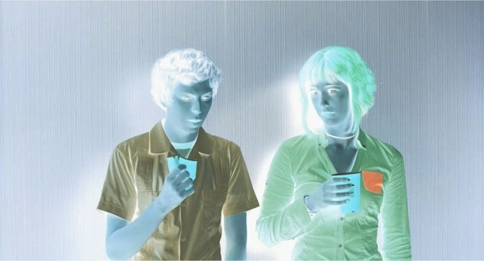
Figure 2: Image after the negate command
3.3 How to monochrome image?
Monochrome means truly black and white (no grey),
we can use convert magic to do this.
convert -monochrome sample.jpg output.jpg
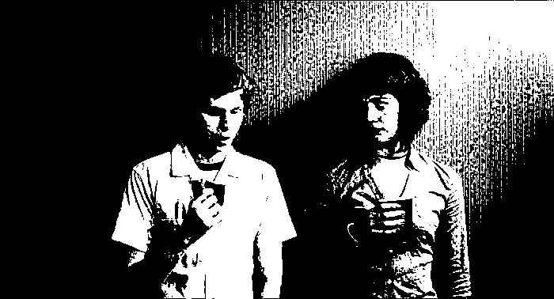
Figure 3: Sample image output in monochrome.
3.4 How to grayscale image?
Basically we change colorspace to gray.
convert -colorspace Gray sample.jpg output.jpg
Figure 4: Output is in grayscale.
3.5 How to blur image?
Yes you can also easily blur image with convert tool.
convert -blur 0x3 sample.jpg output.jpg
In below command 0x3 is the parameter for blur.
Higher the number, higher the blur.
Figure 5: Output is now blurred.
3.6 How to emboss image?
Emboss is a yet another effect. It is a graphics technique in which each pixel of an image is replaced either by a highlight or a shadow, depending on light/dark.
convert -emboss 10 sample.jpg output.jpg
Here I -emboss 10 where 10 is the parameter. Basically
how much emboss you want.
Note: Higher number will take more time.
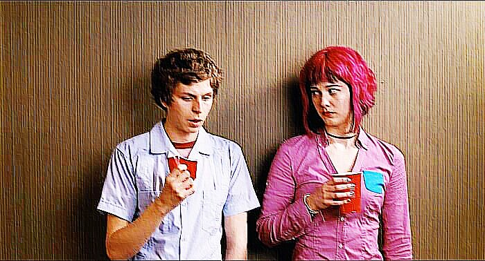
Figure 6: Emboss with parameter 10
3.7 How to shade image?
Shade is like emboss but with 100x times brightness.
convert -shade 120x45 sample.jpg output.jpg
In my case shade parameter is 120x45. But you can play
with these numbers. The first number is basically the depth and
second numbers is brightness. (firstxsecond).
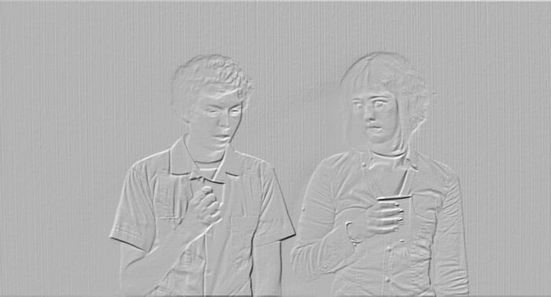
Figure 7: Shade output with 120x45.
3.8 How to charcoal image?
Here how to charcoal a image.
convert -charcoal 1 sample.jpg output.jpg
In my case the parameter is 1. the higher the number, thicker
the line.
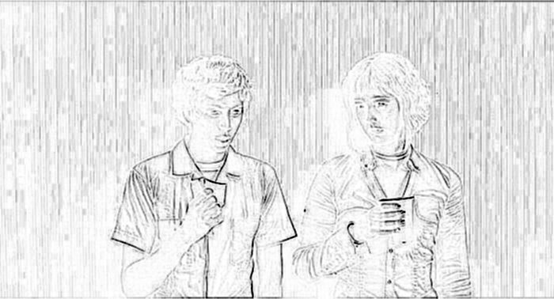
Figure 8: Charcoal effect with value 1.
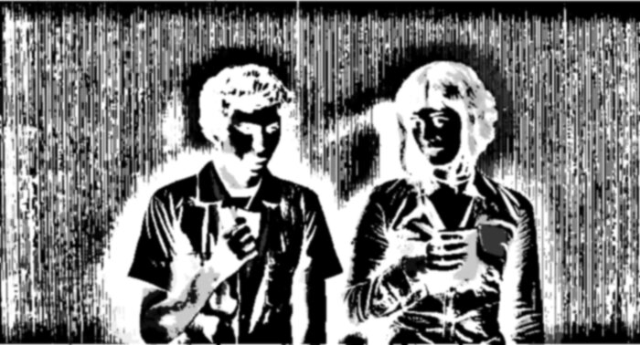
Figure 9: Charcoal effect with value 25.
3.9 How to change brightness of image?
It's very useful to know changing brightness with
imagemagick. To change brightness we have to use flag -modulate.
convert -modulate 50 sample.jpg output.jpg
convert -modulate 200 sample.jpg output.jpg
If Number less then 100 will make image darker.
Figure 10: modulate value is 50 (less than 100)
If Number greater than 100 will make image brighter.
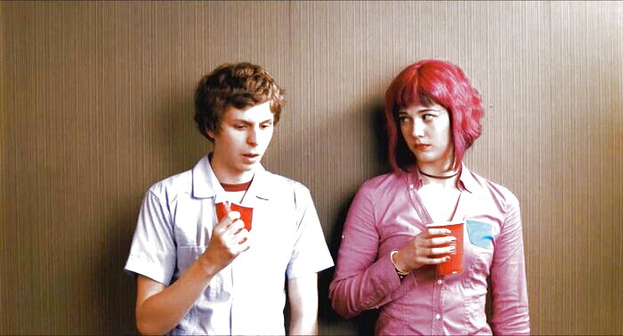
Figure 11: modulate value is 200 (more than 100)
3.10 How to add edge effect to image?
Edge is another very useful effect.
convert -edge 1 sample.jpg output.jpg
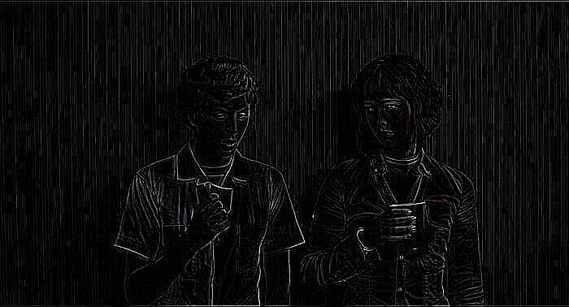
Figure 12: Output with edge parameter 1
Lets change the edge parameter to 25. This will take time to finish.
convert -edge 25 sample.jpg output.jpg
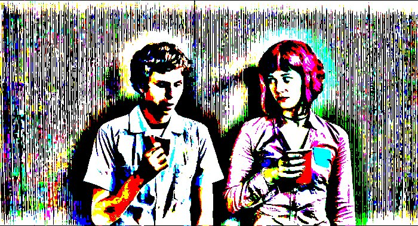
Figure 13: Output with edge parameter 25
3.11 How to add border to image?
Lets do something slightly unique now. Like adding border to an image.
Note: Border change the size (resolution) of the image.
convert -bordercolor red -border 10 sample.jpg output.jpg
-bordercolorflag is for telling what border color you want. You can also give color with rgb values. Like thisrgb(200,0,200).-borderflag is for border which take a value as parameter which is the thickness of border.
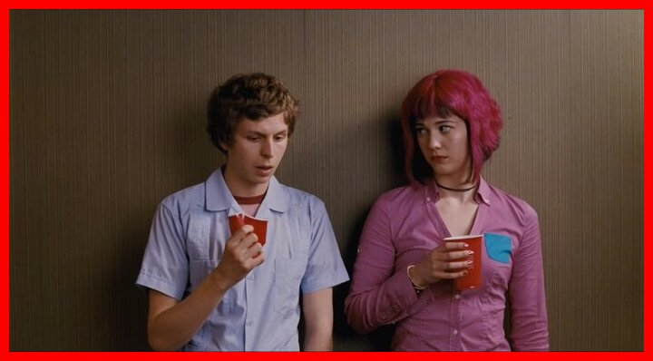
3.12 How to change saturation of image?
Here we will again use -modulate flag.
convert -modulate 100,250 sample.jpg output.jpg
The first numbers 100 is just for brightness (in this case we are not changing brightness). The second numbers 250 is actually the value of saturation.
Figure 15: Output with 250 Saturation
- Any numbers greater than 100 is more saturated and less than 100 is less saturated.
- You can use saturation value 0 for grayscale image.
3.13 How to add paint effect?
Effect to convert image into a oil painting.
convert -paint 5 sample.jpg output.jpg
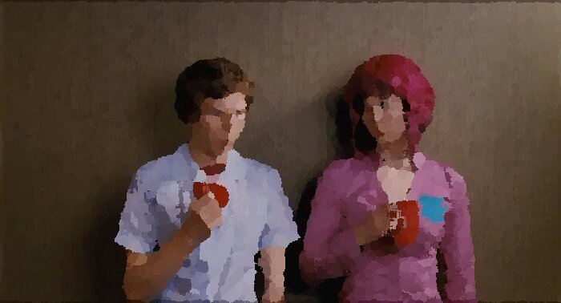
Figure 16: Output with paint effect
3.14 How to solarize image?
For adding solarize effect take percentage instead of value. Here the lower the percentage, the more the effect.
convert -solarize 40% sample.jpg output.jpg
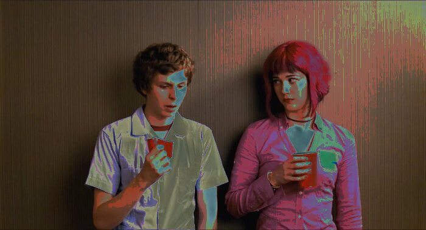
Figure 17: Output with solarized effect
3.15 How to add vignette effect?
Add vignette effect quickly on your nostalgic high school photos.
convert -background black -vignette 100x300 output.jpg
- Higher the numbers smoother the vignette effect is.
Figure 18: Smooth vignette effect with 100x300
- Lower the number stroger the effect is
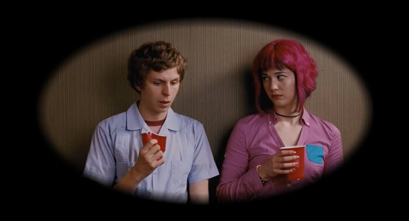
Figure 19: Strong vignette effect with 10x50